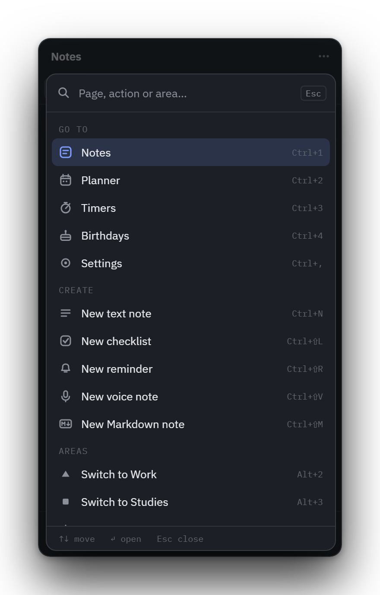
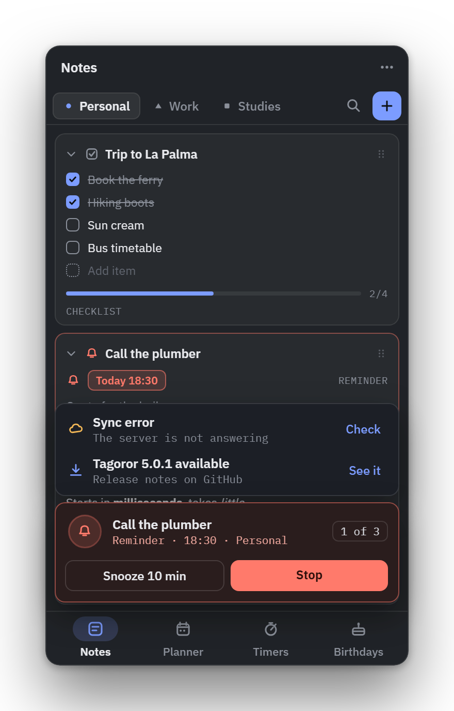
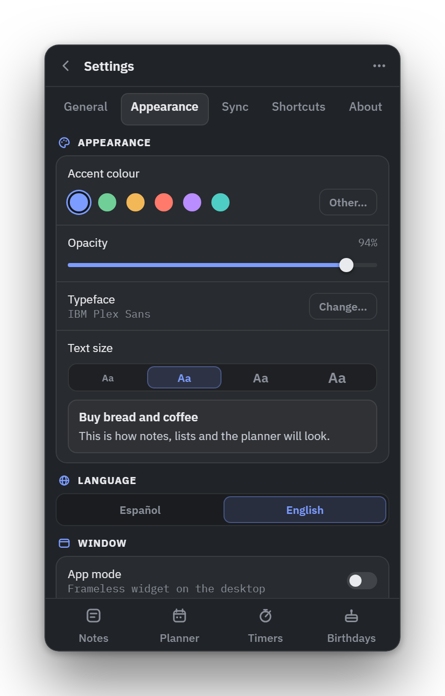
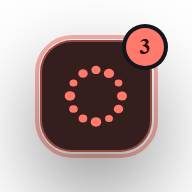
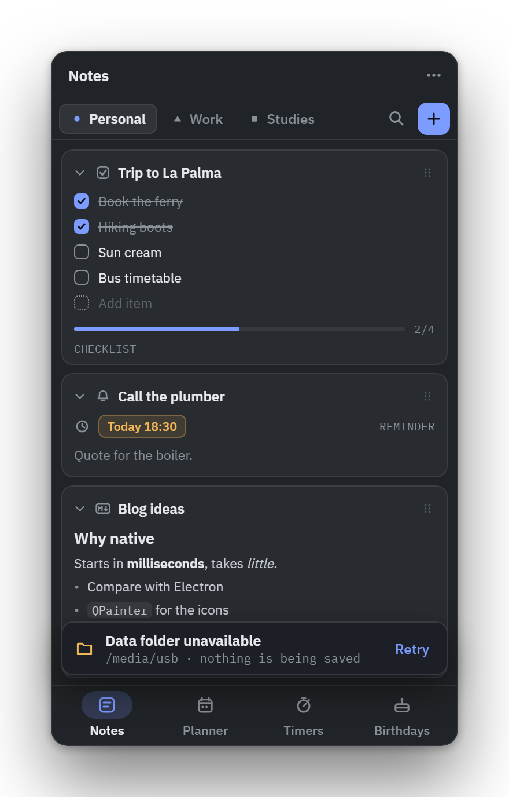
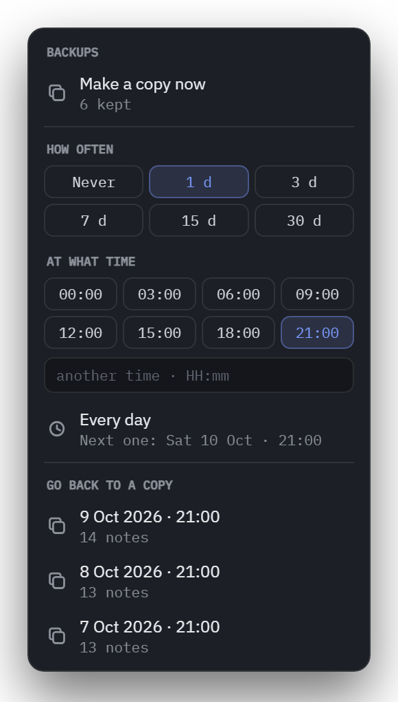

Tagoror.
Tus notas, tu tiempo y tu agenda, en un solo widget sobre tu escritorio de Linux o Windows.Your notes, your time and your schedule, in one widget on your Linux or Windows desktop.
Míralo en movimiento.See it in motion.
Siempre a la vista. Guardado *donde *tú *decidas.Always in sight. Saved *where *you *decide.
Apunta como piensas.Jot it down your way.
Texto, Markdown, checklists, recordatorios o voz. Y cualquier nota se pliega hasta su título.Text, Markdown, checklists, reminders or voice. And any note folds down to its title.
Escribe, formatea, marca, programa o dicta.Write, format, tick, schedule or speak.
Pulsa + en el panel o usa su atajo. Cada nota es una tarjeta compacta que puedes plegar, reordenar, buscar y editar sin salir del escritorio. Pruébalo aquí:Hit + in the panel or use its shortcut. Every note is a compact card you can fold, reorder, search and edit without leaving the desktop. Try it here:
Todo en un sitio fijo.Everything in one fixed place.
Una barra abajo, una sola fila de herramientas y un menú ⋯. Nada empuja tus notas.A bar along the bottom, a single row of tools and a ⋯ menu. Nothing pushes your notes around.



Navegación que no se mueve.Navigation that stays put.
Notas, Planner, Timers y Cumpleaños en una barra abajo, con la página abierta marcada. Si ensanchas el panel, pasa a ser un raíl a la izquierda.Notes, Planner, Timers and Birthdays in a bar along the bottom, with the open page marked. Widen the panel and it becomes a rail on the left.
Una paleta para todo.One palette for everything.
Desde cualquier sitio: escribe para ir a una página, crear cualquier nota o cambiar de área. Los acentos dan igual: «cumple» encuentra Cumpleaños.From anywhere: type to go to any page, create any kind of note or switch area. Accents don't matter: «cumple» finds Birthdays.
Un solo sitio para los avisos.One place for every notice.
Lo que suena, una carpeta que falta, un error de sincronización o una versión nueva: en una tarjeta sobre la barra, lo más urgente primero. Las alarmas se paran o se posponen desde ahí.What rings, a missing folder, a failed sync or a new version: in one card above the bar, most urgent first. Alarms are stopped or snoozed right there.
Ajustes en pestañas.Settings in tabs.
General, Apariencia, Sincronización, Atajos y Acerca de. Cada atajo, en un solo sitio, y una flecha para volver.General, Appearance, Sync, Shortcuts and About. Every shortcut in one place, and a back arrow to return.
Pequeñas cosas que se notan cada día.Small things you notice every day.
Lo que no sale en la foto: tonos de alarma, listas con fecha, un modo app con su propia ropa y pocos clics para todo.What the screenshots don't show: alarm tones, lists with a date, an app mode in its own clothes and few clicks for everything.
Recordatorios que suenan de verdad.Reminders that actually ring.
No es una notificación que se pierde en una esquina. Suena con el tono que elijas —o con uno tuyo— y el aviso se queda en rojo hasta que lo atiendes.Not a notification lost in a corner. It rings with the tone you pick —or one of your own— and stays red until you deal with it.

Con el panel plegado no te lo pierdes: las piedras del dock se vuelven rojas, un halo late a su alrededor y una insignia cuenta las alarmas.Even with the panel folded you won't miss it: the dock's stones turn red, a halo beats around it and a badge counts the alarms.
Tu semana, en la misma rejilla.Your week, on one grid.
Eventos y tareas con categorías, que mueves arrastrándolos. Los recordatorios, checklists con fecha y cumpleaños aparecen solos, y Google Calendar se sincroniza en los dos sentidos.Events and tasks with categories, moved by dragging them. Reminders, dated checklists and birthdays show up on their own, and Google Calendar syncs both ways.
Tus notas, en tu nube.Your notes, in your cloud.
Google Drive, tu servidor WebDAV o una carpeta sincronizada. O ninguna: es opcional.Google Drive, your own WebDAV server or a synced folder. Or none at all: it's optional.
Tus datos, donde tú quieras.Your data, wherever you want.
Tagoror guarda las notas como archivos en una carpeta que eliges tú. No hay servidor nuestro ni cuenta, y nada sale de tu equipo si no lo pides.Tagoror stores notes as files in a folder you pick. No server of ours, no account, and nothing leaves your machine unless you ask.
drive.file.Google Drive, your own WebDAV or Nextcloud server, or a folder Syncthing, Dropbox or OneDrive already keep in step. It merges note by note, so two computers at once don't overwrite each other. On Drive, with the minimum scope: drive.file.

Pruébalo aquí: elige un acento.Try it here: pick an accent.
El acento es el único color fuerte de Tagoror. Cámbialo y mira cómo se tiñe esta página.The accent is Tagoror's only strong colour. Change it and watch this page follow.
Tagoror.
Gratis y libre, para Linux y Windows.Free and open, for Linux and Windows.
Descárgalo ↓Get it ↓Gratis, para siempre, en tu escritorio.Free, forever, on your desktop.
Todo enlaza a la última versión publicada en GitHub.Everything links to the latest release on GitHub.
git clone https://github.com/Larzt/tagoror cd tagoror/packaging/arch makepkg -siLo instala a través de pacman;
pacman -R tagoror lo quita sin tocar tus notas.Installs through pacman; pacman -R tagoror removes it without touching your notes.
git clone https://github.com/Larzt/tagoror cd tagoror cmake -B build -DCMAKE_BUILD_TYPE=Release cmake --build buildNecesitas Qt 6 y un compilador con C++20.You need Qt 6 and a C++20 compiler.
Preguntas frecuentesFAQ
¿Es gratis?Is it free?
Sí. Tagoror es software libre con licencia MIT: gratis, sin versión premium y con todo el código en GitHub.Yes. Tagoror is free software under the MIT license: no premium tier, and all the code is on GitHub.
¿Necesito una cuenta?Do I need an account?
No. Se abre y funciona. Solo si sincronizas con Google Drive o Google Calendar te pedirá acceso a tu cuenta de Google, con el permiso mínimo.No. Open it and it works. Only if you sync with Google Drive or Google Calendar will it ask for access to your Google account, with the minimum scope.
¿Puedo sincronizar sin Google?Can I sync without Google?
Sí. Puedes usar tu propio servidor WebDAV (Nextcloud, ownCloud, la mayoría de NAS) o una carpeta que ya sincronizan Syncthing, Dropbox, OneDrive o el cliente de Nextcloud. Los tres fusionan nota a nota.Yes. You can use your own WebDAV server (Nextcloud, ownCloud, most NAS) or a folder that Syncthing, Dropbox, OneDrive or the Nextcloud client already keep in step. All three merge note by note.
¿Puedo poner mi propio tono de alarma?Can I use my own alarm tone?
Sí. En Apariencia → Alarma eliges entre cuatro tonos o un WAV tuyo (PCM de 16 bits, hasta 8 MB, que se copia a la carpeta de datos), con su control de volumen.Yes. Appearance → Alarm offers four tones or a WAV of your own (16-bit PCM, up to 8 MB, copied into the data folder), with a volume slider.
¿Funciona en Wayland?Does it work on Wayland?
Sí. La única limitación es que en Wayland el panel siempre se despliega hacia abajo y a la derecha del dock.Yes. The only limitation is that on Wayland the panel always unfolds down and to the right of the dock.
¿Dónde se guardan mis notas?Where are my notes stored?
En la carpeta que elijas: tu carpeta personal, un disco externo o un USB. Si no está disponible, Tagoror no escribe nada y te avisa.In the folder you choose: your home folder, an external drive or a USB stick. If it isn't available, Tagoror writes nothing and warns you.
¿Se actualiza sola?Does it update itself?
No. Te avisa cuando hay una versión nueva, pero nunca descarga nada por su cuenta. Y puedes apagar el aviso.No. It lets you know when a new version is out, but never downloads anything on its own. You can turn the notice off too.